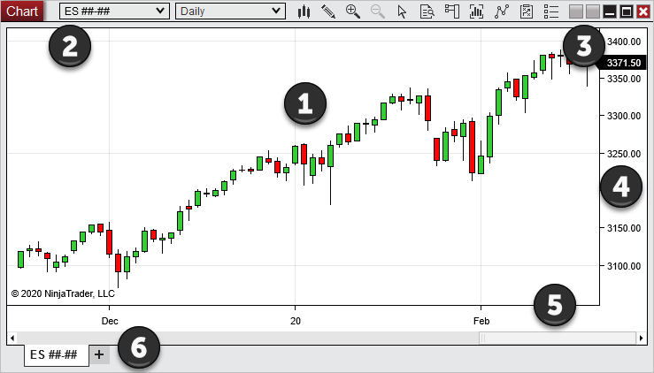

|
<< Click to Display Table of Contents >> Creating a Chart |


|
Creating a Chart
|
<< Click to Display Table of Contents >> Creating a Chart |
|
The following section covers how to open a NinjaTrader chart.
Opening a New ChartTo create a new chart, select the New menu from the NinjaTrader Control Center, then select the menu item Chart. The Data Series window will open where you can choose an instrument and an optional Template to apply to the chart. Please see the "Working with Price Data" page of the Help Guide for more information.
NinjaTrader does not limit the number of chart windows that can be opened, however more open windows will require more PC resources. Please see the Performance Tips page for more information on improving PC performance.
Selecting an InstrumentOnce inside the Data Series window, there are multiple ways to choose an instrument. You can select an instrument from the available instrument lists, type the instrument symbol into the empty instrument field and press the enter key, or use the instrument lookup window by pressing the magnifying glass button next to the instrument field. Please see the "Working with Price Data section of the Help Guide for more information on selecting instruments. |
 Understanding the chart display
Understanding the chart display
Chart Display OverviewEach NinjaTrader chart is a free floating window that can be manually resized by dragging the edges of the window for arrangement within the open Workspace.

The chart image displays some of the common features you will see inside a NinjaTrader chart window:
|